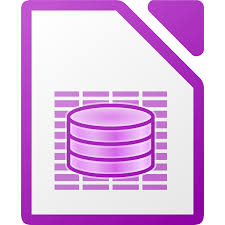
Bases de datos¶- ¿Sabes qué es una base de datos?
- ¿Para qué sirven?
Como amantes del cine, tenemos una gran colección de DVDs en casa. Hasta ahora llevábamos el control en una hoja de Calc, donde apuntábamos datos como título, director, género y otros detalles.
Últimamente hemos empezado a prestar nuestras películas a amigos y familiares, y eso nos preocupa porque podemos olvidar a quién se las dejamos o si nos las devolverán.
Para resolverlo, vamos a crear una base de datos que nos permita:
- Guardar la información de cada película (título, director, año, formato, etc.).
- Registrar a las personas a las que prestamos cada película (nombre, teléfono, fecha de préstamo).
- Consultar fácilmente quién tiene cada DVD y cuándo debe devolverse.
- Evitar pérdidas y facilitar el seguimiento de los préstamos.
Una base de datos es un programa que sirve para guardar y organizar información.
En ella se puede:
- Guardar grandes cantidades de datos.
- Buscar información fácilmente.
- Relacionar la información entre sí.
Hoy en día, la base de datos más conocida es la de Microsoft Office - Access.
También se utiliza mucho la base de datos de la suite LibreOffice - Base, que es totalmente compatible con la de Microsoft y además gratuita.
Google no tiene una aplicación de base de datos. En su lugar proponen una combinación de la hoja de cálculo vinculada a formularios digitales.
Las bases de datos de escritorio mencionadas anteriormente, tienen cuatro funciones principales:
-
Tablas: Permiten almacenar los datos relacionados de forma organizada.
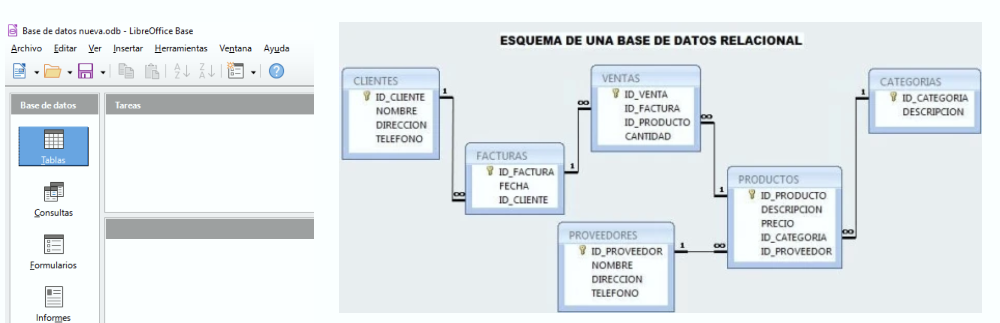
Relación de tablas -
Consultas: Permiten consultar los datos de forma fácil, filtrándolos y ordenándolos.
- Formularios: Permiten la entrada de datos de forma fácil y ordenada.
- Informes: Permiten obtener tablas de los datos impresos.
¿Qué es una tabla?¶
Se puede definir una base de datos como un colección de datos relacionados entre sí. Cada colección de datos relacionados se almacena en una tablas.
Cada tabla consta de:
- Filas (registros): cada elemento guardado (por ejemplo, un película).
- Columnas (campos): las partes de información que queremos guardar (por ejemplo, título, año, director...).
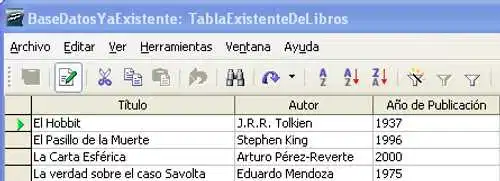
Por ejemplo, en nuestra base de datos vamos a tener dos tablas:
- Películas:: con información acerca de todos nuestras películas donde puedes almacenar el título, el nombre del director, el año de estreno, etc..
- Amigos: con toda la información de contacto de tus amigos, por ejemplo su nombre y apellidos, su número de móvil, su dirección de correo electrónico, etc.
Creación de una base de datos¶
Para crear una base de datos nos situamos en el entorno de LibreOffice Base. En la ventana inicial, seleccionamos “Crear una nueva base de datos” y hacemos clic en Siguiente.
A continuación, debemos elige “Registrar la base de datos” → Sí y pulsar Finalizar.
Por último, escribimos un nombre para el archivo (por ejemplo, peliculas.odb) y lo guardamos.
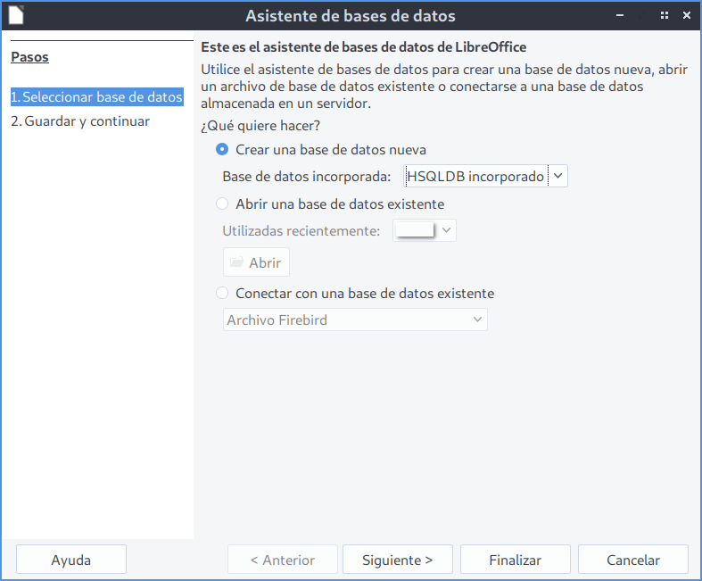
Creación de tablas¶
Nos situamos en el entorno de LibreOffice Base. En el panel izquierdo Base de datos hacemos clic en el icono Tablas y, dentro del panel Tareas, pulsamos sobre Crear tabla en modo de diseño….
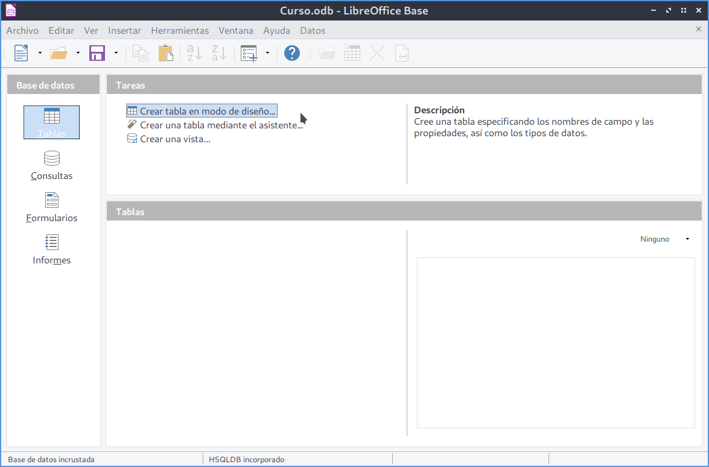
A continuación por cada columna de nuestra futura tabla podemos indicar el nombre, el tipo de datos y una breve descripción sobre lo que almacenará dicha columna.
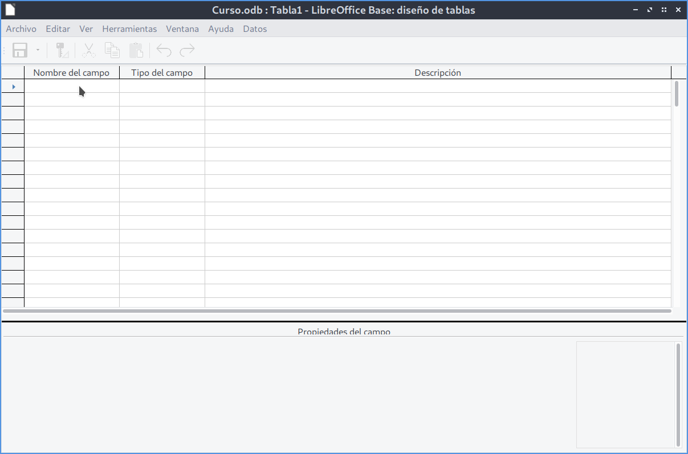
Por ejemplo, nuestra tabla películas tendrá los siguientes campos:
| Nombre del campo | Tipo de dato | Descripción |
|---|---|---|
| Id_pelicula | Numérico | Identificador único |
| Titulo | Texto | Nombre de la película |
| Director | Texto | Nombre del director |
| Año | Fecha | Año de estreno |
| Formato | Texto | DVD o VHS |
| Vista | Sí/No | Si la hemos visto o no |
Para definir la primera columna nos situamos en la primera fila de la rejilla y en la columna Nombre del campo escribimos Id_pelicula. Será nuestra clave primaria. 💡 La clave principal sirve para identificar cada fila de forma única.
Para marcar el campo Id_pelicula como clave principal, haz clic en el borde izquierdo de esa fila y selecciona el icono de llave 🔑. Esto indica que ese campo no puede repetirse ni quedar vacío.
A continuación debemos elegir el Tipo del campo, haciendo clic con el botón izquierdo del ratón sobre dicha columna y elegir un tipo de datos de la lista desplegable.
Los tipos de datos más usados
| Tipo de dato | Qué guarda | Ejemplo |
|---|---|---|
| Texto (VARCHAR) | Palabras o frases | “Avatar”, “Ridley Scott” |
| Numérico (NUMERIC) | Números | 2025, 15 |
| Fecha (DATE) | Fechas completas | 01/01/2020 |
| Sí/No (BOOLEAN) | Verdadero o falso | Sí / No |
En nuestro caso, para este campo vamos a elegir uno de los de tipo numérico llamado Número [Numeric].
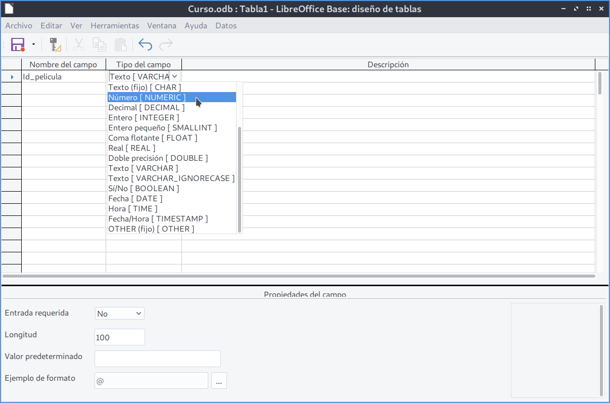
Definimos el resto de campos de nuestra tabla y la guardamos con el nombre Peliculas.

Edición de datos¶
Una vez que tenemos creada nuestra tabla Peliculas vamos a insertar información.
Damos doble clic sobre la tabla Peliculas
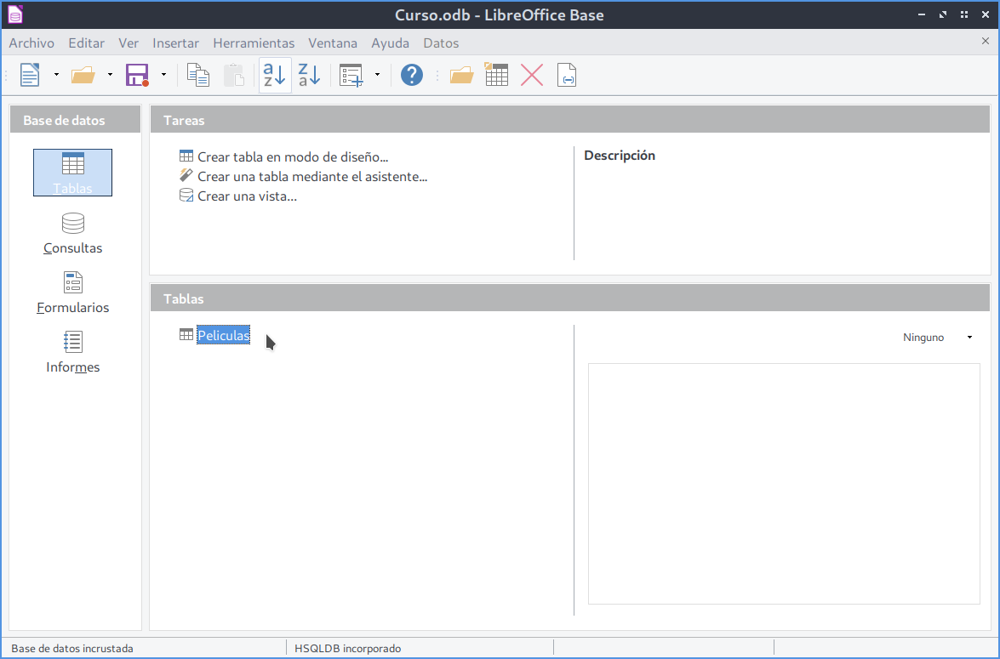
Podemos ver que aparecen las seis columnas que definimos al crear la tabla. Observamos que la columna Vista aparece con un cuadrado. Este cuadrado nos indica que es un campo del tipo Sí/No. Insertamos los valores de la primera película y obtenemos la siguiente tabla:
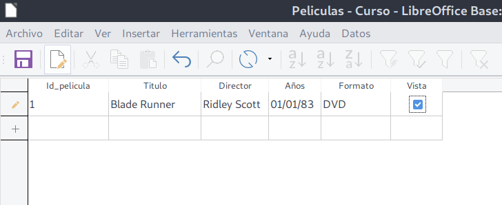
Debemos continuar rellenando la tabla con cuidado de no repetir el valor de la columna Id_película de lo contrario obtendremos el siguiente error:
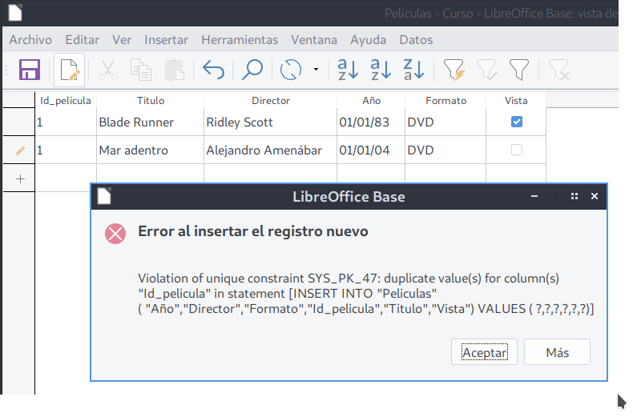
Nuestra tabla Películas tendrá el siguiente aspecto:
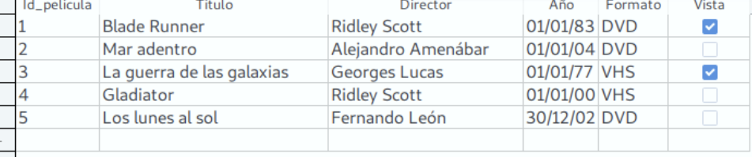
Actividad
📝 AA3.13 Películas¶
(C.ESP2 / CE2.3 / IC1-3p)
- Abre LibreOffice - Base y crea la base de datos
Pelicula - Crea y rellena la tabla Películas siguiendo los pasos descritos en la unidad.
- Guarda la base de datos y realiza una captura de pantalla de cada tabla rellenada.
Actividad Refuerzo
🔨 AAR3.14 Refuerzo¶
(C.ESP2 / CE2.3 / IC1-3p)
-
Crea la tabla Amigos con los siguientes campos:
Nombre del campo Tipo de dato Descripción Id_amigo Numérico Identificador único Nombre Texto Nombre del amigo Apellidos Texto Apellidos del amigo Telefono Texto Número de teléfono Correo Texto Dirección de correo electrónico Id_pelicula Numérico Identificador de la película prestada -
Define el campo
Id_amigocomo clave principal. - Rellena ambas tablas con al menos tres registros de ejemplo.
Actividad Profundización
💡 AA3.15 Profundización¶
(C.ESP2 / CE2.3 / IC1-3p)
Crea la base de datos explicada en el vídeo.